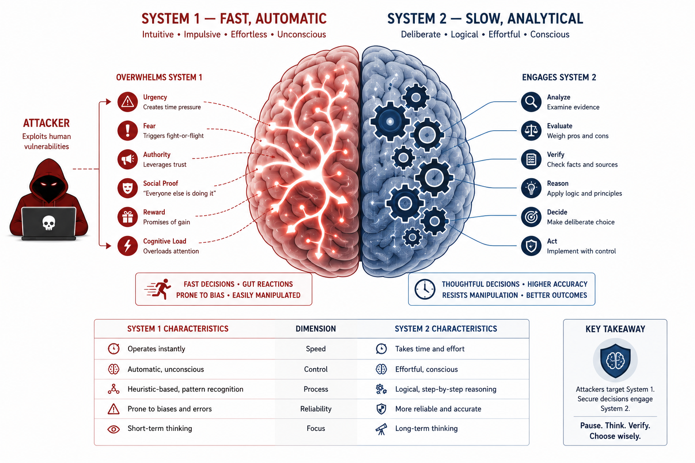
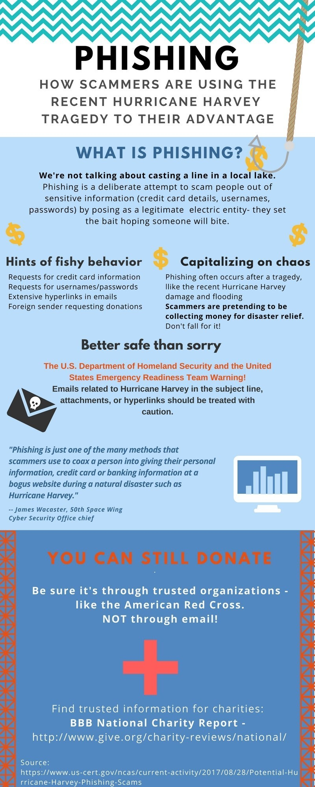
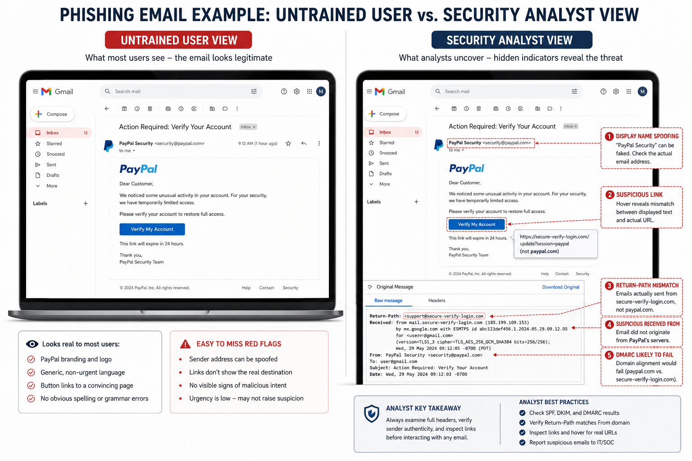

Topic 1.1
Understanding Social Engineering
Chapter Contents
- I. Why the Human Interface Is the Weakest Boundary
- II. Email Authentication: SPF, DKIM, and DMARC
- III. Case Studies: the DNC, Twitter, and Toyota Boshoku
- IV. Defending the Inbox: Phishing-Resistant Login and Strict DMARC
- V. References and Further Reading
- VI. Interactive Lab, SPF/DMARC Record Analyzer
AP Cybersecurity Alignment
Unit 1: Introduction to Security · Topic 1.1, Understanding Social Engineering
- 1.1.A Analyze Risk
Recognize the common indicators that a message or interaction is a social engineering attempt. - 1.1.B Analyze Risk
Explain how social engineering tactics persuade a victim to carry out the action an adversary wants. - 1.1.C Analyze Risk
Describe the consequences a victim may face after a successful social engineering attack.
Objective codes follow the AP Cybersecurity Course Framework (College Board, AP Career Kickstart). Objectives are paraphrased here, not quoted.
I. Why the Human Interface Is the Weakest Boundary

Within the academic discipline of information security, the human interface represents the most complex, unpredictable, and vulnerable boundary. Traditional security models focus extensively on reinforcing cryptographic primitivesCryptographic PrimitiveA building block of a security system, like a lock mechanism before it's installed in a door. Examples include AES (a block cipher), SHA-256 (a hash function), and RSA (a public-key algorithm). Each "primitive" does one specific mathematical job. Used as components in protocols like TLS and HTTPS. See NIST FIPS 140-3 for validated primitives., tightening firewallFirewallSoftware or hardware that sits between your network and the internet and acts like a security guard, only letting through traffic that matches the approved rules. It checks: where is this data coming from? Where is it going? Which port is it using? Operates at OSI Layers 3–7. Stateful firewalls track TCP connection state. Next-gen firewalls (NGFW) inspect application content. See NIST SP 800-41. rules, and deploying intrusion prevention systemsIntrusion Prevention System (IPS)An automated security system that watches all network traffic and blocks attacks in real-time, like a security guard who not only sounds the alarm but also physically stops the intruder. Contrast with IDS (Intrusion Detection System), which only alerts. IPS sits inline in the network path. Uses signature detection (known attacks) + anomaly detection (unusual behavior). See NIST SP 800-94.. However, these technical defenses assume that the administrative and operational operators executing commands are acting with uncompromised intent and verification. Social engineeringSocial EngineeringManipulating people, rather than hacking computers, to get what you want. A con artist calls you pretending to be your bank and tricks you into giving your PIN. That is social engineering. The "hack" is psychological, not technical. Classified under MITRE ATT&CK tactic TA0001 (Initial Access), technique T1566 (Phishing). Kevin Mitnick popularized the term in his 2002 book The Art of Deception. is the systematic exploitation of human cognitive architectureCognitive ArchitectureThe underlying "hardware and software" of the human mind, how memory, attention, and decision-making are organized. Just as a computer's architecture determines how it processes data, your brain's architecture determines how you process information and make decisions. In security contexts: attackers study cognitive architecture to find "bugs" (biases and shortcuts) they can exploit. Kahneman (2011), Tversky & Kahneman (1974). to bypass these administrative, physical, and logical security perimeters.
From an academic perspective, social engineering is not merely a collection of deceptive tricks but a structured exploit targeting the human decision-making process. The theoretical foundation of this exploit is heavily rooted in cognitive psychology, particularly Daniel Kahneman's Dual-System Theory of CognitionKahneman's Dual-System TheoryA Nobel Prize-winning model of how humans think. System 1 is your gut reaction, fast, automatic, emotional. System 2 is your careful reasoning, slow, deliberate, logical. Imagine texting while driving: your System 1 is driving (automatic), and you're trying to engage System 2 for texting. You can't fully do both. Kahneman, D. (2011). Thinking, Fast and Slow. Farrar, Straus and Giroux. Nobel Prize in Economic Sciences, 2002.. Kahneman posits that human decision-making is governed by two distinct cognitive systems:
- System 1 (Heuristic Processing): This system operates automatically, fast, and with little or no conscious effort. It relies on evolutionary heuristicsHeuristicA mental shortcut or rule of thumb that helps you make fast decisions without thinking through every detail. "If it looks like a duck, sounds like a duck, it's probably a duck." Heuristics are efficient but can be wrong, attackers craft scenarios that trigger the wrong heuristic. Tversky, A. & Kahneman, D. (1974). Judgment under Uncertainty: Heuristics and Biases. Science, 185, 1124–1131., mental shortcuts, to process vast amounts of environmental data and make rapid decisions. While highly efficient for daily survival, System 1 is highly susceptible to cognitive biasesCognitive BiasA systematic error in thinking, a "bug" in human reasoning that causes us to make predictable mistakes. Authority bias (obeying whoever seems important) and urgency bias (acting fast under time pressure) are two the attackers exploit most. Over 180 cognitive biases are documented. Security-relevant ones include authority bias, social proof, loss aversion, and optimism bias. See Cialdini (2007) for security applications. and logical fallacies.
- System 2 (Analytical Processing): This system allocates attention to the effortful mental operations that demand it, including complex computations, logical reasoning, and critical verification. System 2 is slow, deliberate, and consumes significant metabolic energy.
Social engineering campaigns are explicitly engineered to force the target's cognitive processing into System 1. Threat actorsThreat ActorAnyone with intent to cause harm to a system, from a nation-state government running cyberwar operations, to a 16-year-old running a phishing script from their bedroom. Categories: nation-state (APT), cybercriminal, hacktivist, insider, script kiddie. MITRE ATT&CK maintains a database of real-world threat actor groups (called "Groups") with their known techniques. See mitre.org/cti. achieve this by introducing high-stress triggers, such as acute emotional arousal (fear, curiosity, greed) or administrative pressure, which deplete the victim's cognitive capacity and prevent the activation of System 2. By inducing a state of cognitive overloadCognitive OverloadWhen the brain has more information to process than it can handle, causing it to shut down careful thinking and fall back on automatic responses. Like a computer with too many programs open, performance degrades. Miller, G.A. (1956). The magical number seven, plus or minus two. Psychological Review, 63(2), 81–97. Working memory capacity is approximately 7±2 chunks of information., the attacker ensures that the victim relies on default heuristics rather than critical verification mechanisms.
To systematically exploit System 1 heuristics, adversaries leverage Robert Cialdini'sRobert CialdiniA social psychologist at Arizona State University who spent decades studying compliance, what makes people say "yes" to requests. His 1984 book Influence identified six universal principles of persuasion used by salespeople, negotiators, and (as it turns out) hackers. Cialdini, R.B. (2007). Influence: The Psychology of Persuasion (Revised Edition). Harper Business. Required reading in security awareness training curricula worldwide. taxonomy of social influence. Cialdini identifies six core principles of persuasion that govern human compliance:
- Authority: Humans are socially conditioned to comply with directives from perceived figures of authority. Attackers project authority through the use of corporate hierarchies, legal threats, or technical jargon to disarm the victim's skepticism.
- Urgency (Scarcity): By framing an event as time-sensitive (e.g., "immediate account suspension within 15 minutes"), attackers restrict the victim's capacity for rational deliberation, prompting them to execute commands before sanity audits can be completed.
- Consensus (Social Proof): Individuals determine appropriate behavior by observing the actions of peers. Threat actors spoof consensus by indicating that other team members or executives have already complied with the requested action.
- Reciprocity: The psychological impulse to return a favor. An attacker may perform a minor, unsolicited helpful act (such as sharing custom technical resources) to establish a subconscious obligation of cooperation in the victim.
- Liking: People are far more cooperative with individuals they like or share commonalities with. Attackers scrape social media profiles to identify shared interests, geographical background, or hobbies to establish rapid rapport.
- Commitment and ConsistencyCommitment & Consistency PrincipleOnce people agree to something small, they feel internal pressure to stay consistent with that decision. A foot-in-the-door salesman gets you to say "yes" to a tiny request first. Attackers use the same technique: first ask you to verify your employee number (harmless), then ask you to reset a password (escalation). You already said yes once, so saying no feels inconsistent. Cialdini (2007), Chapter 3. Also: Freedman & Fraser (1966). Compliance without pressure: The foot-in-the-door technique. JPSP, 4(2), 195–202.: The desire to act consistently with past commitments. Attackers start with minor, non-threatening requests (the foot-in-the-door techniqueFoot-in-the-Door TechniqueNamed after door-to-door salespeople who would physically put their foot in your door so you couldn't close it. Psychologically: if you get someone to agree to a small request first, they're much more likely to agree to a larger one later. The first "yes" creates consistency pressure. Freedman, J.L. & Fraser, S.C. (1966). Journal of Personality and Social Psychology, 4(2), 195–202.) before escalating to high-risk requests.
By combining these cognitive triggers, adversaries construct highly persuasive pretextsPretext / PretextingCreating a fake but believable story (a "pretext") to justify your request. A classic example: an attacker calls the IT helpdesk pretending to be a new employee who forgot their password on their first day. The "new employee" pretext makes the request feel normal and sympathetic. Pretexting is prohibited under the Gramm-Leach-Bliley Act (financial data) and violates NIST SP 800-50 employee verification requirements., elaborate scenarios that establish a plausible context for the attack, allowing them to manipulate targets into violating security policies.
II. Email Authentication: SPF, DKIM, and DMARC

PhishingPhishingSending fake emails, texts, or messages that pretend to be from a trusted sender (your bank, your boss, Google) to trick you into clicking a malicious link or giving up your password. Named after "fishing", the attacker casts bait and waits for victims to bite. MITRE ATT&CK T1566. Verizon DBIR 2024: phishing is the initial access vector in 36% of all breaches. See RFC 5321 (SMTP) for the protocol-level mechanism. campaigns exploit the underlying trust architecture of internet mail protocols. The Simple Mail Transfer Protocol (SMTP)SMTP, Simple Mail Transfer ProtocolThe protocol that handles sending email between servers, like the postal service for the internet. Created in 1982 (RFC 821), SMTP was designed for reliability, not security. It has no built-in way to verify that the person claiming to send the email is actually who they say they are. RFC 5321 (October 2008) is the current authoritative specification. SMTP uses TCP port 25 for server-to-server, port 587 (SUBMISSION) for client-to-server., defined in RFC 5321RFC 5321, The SMTP StandardRFC stands for "Request for Comments", the documents that define how the internet works. RFC 5321 is the rule book for how email is delivered between servers. It defines the SMTP envelope: who sends (MAIL FROM), who receives (RCPT TO), and the DATA command. Think of it as defining the outside of the envelope, not the letter inside. Klensin, J. (2008). Simple Mail Transfer Protocol. IETF RFC 5321. The companion standard RFC 5322 defines message format (the "letter inside")., handles message transit but was designed without built-in sender verification. This design separates the envelope senderEnvelope Sender (MAIL FROM)When you mail a letter, you write the return address on the envelope. The envelope sender (RFC 5321 MAIL FROM) is the same concept, it tells the mail server where to send bounced messages. Crucially, this is SEPARATE from the From: field a human sees in their inbox. Attackers use an email they control as the envelope sender, but write a fake address in the visible From: field. RFC 5321 §3.3. The envelope sender is also called "Return-Path" or "5321.MailFrom". SPF validation checks ONLY this field, not the human-visible From:. (used for routing bounces, defined in the Return-Path or MAIL FROM command) from the message header senderHeader Sender (From: field)The "From:" line you see when you open an email in Gmail or Outlook. This is defined by RFC 5322, a completely separate standard from RFC 5321. Here's the problem: SMTP doesn't require these two to match. An attacker can put CEO@company.com in the visible From: field while the actual envelope sender is attacker@evil.com. Your email client shows only the From: field. RFC 5322 §3.6.2 defines the From header field. The critical vulnerability: RFC 5321 and RFC 5322 were written independently with no enforcement of consistency between them. (defined in RFC 5322, which contains the visible From: field rendered in the user's mail client). Attackers exploit this mismatch by spoofing a trusted domain in the visible header sender while utilizing an attacker-controlled domain in the envelope sender to satisfy initial security audits.
evil.com.
The following transaction log illustrates an SMTP session where an attacker spoofs an executive's address. Notice how the RFC 5321 envelope sender (MAIL FROM) points to an external attacker-controlled domain, while the RFC 5322 header (From:) rendered to the user claims to be the internal CEO.
S: 220 mail.victim-corporation.com ESMTP Postfix
C: EHLO mail.attacker-infrastructure.net
S: 250-mail.victim-corporation.com Hello mail.attacker-infrastructure.net [198.51.100.12]
S: 250-SIZE 31457280
S: 250-8BITMIME
S: 250 STARTTLS
C: STARTTLS
S: 220 2.0.0 Ready to start TLS
C: [TLS Handshake Completed - Session Encrypted]
C: EHLO mail.attacker-infrastructure.net
S: 250-mail.victim-corporation.com Hello mail.attacker-infrastructure.net [198.51.100.12]
S: 250-SIZE 31457280
S: 250 8BITMIME
C: MAIL FROM:<compromised-account@attacker-infrastructure.net> ← RFC 5321 envelope (real sender)
S: 250 2.1.0 Ok
C: RCPT TO:<finance-analyst@victim-corporation.com>
S: 250 2.1.5 Ok
C: DATA
S: 354 End data with <CR><LF>.<CR><LF>
C: From: "Jane Doe, CEO" <jane.doe@victim-corporation.com> ← RFC 5322 header (SPOOFED)
C: To: "Finance Analyst" <finance-analyst@victim-corporation.com>
C: Subject: URGENT: Wire Transfer Approval Req
C: Date: Fri, 26 Jun 2026 14:00:00 -0400
C: Message-ID: <unique-header-id-998877@victim-corporation.com>
C: MIME-Version: 1.0
C: Content-Type: text/plain; charset=UTF-8
C:
C: Analyst,
C: Please execute an immediate wire transfer of $142,500.00 to the routing
C: number details attached in the link below. This is for the acquisition of
C: the service contractor we discussed yesterday. Do not delay this transaction.
C:
C: Link: http://portal-verification-victim-corp.net/transfer
C:
C: Jane Doe
C: CEO, Victim Corporation
C: .
S: 250 2.0.0 Ok: queued as 4FA92C118B
C: QUIT
S: 221 2.0.0 ByeTo defend against sender spoofing, organizations implement three primary DNSDNS, Domain Name SystemThe internet's phone book. When you type "google.com", DNS translates it to an IP address (like 142.250.80.46) that computers actually use. For email security, DNS is also used to publish authentication records (SPF, DKIM, DMARC) that tell receiving servers: "Only accept email from these authorized senders." RFC 1034/1035 define DNS. DNS queries run over UDP port 53 (small responses) or TCP port 53 (large responses like DNSSEC). DNSSEC adds cryptographic signing of DNS records.-based validation frameworks: Sender Policy Framework (SPF)SPF, Sender Policy FrameworkA DNS record that lists which mail servers are allowed to send email on behalf of your domain. Like publishing an official list: "Only these post offices are authorized to send letters with our return address." If a mail comes from a server not on the list, the receiving server knows something is wrong. RFC 7208 (April 2014). SPF only validates the RFC 5321 MAIL FROM (envelope), NOT the visible From: header. This is why DMARC is needed to bridge the gap., DomainKeys Identified Mail (DKIM)DKIM, DomainKeys Identified MailA cryptographic signature system where the sending mail server signs the email with a private key. The receiving server verifies the signature using a public key published in DNS. If the signature is valid, the email hasn't been tampered with and genuinely came from the claimed domain. Like a wax seal on a letter. RFC 6376 (September 2011). DKIM uses RSA-SHA256 or Ed25519. The public key is published at: selector._domainkey.domain.com. DKIM survives forwarding (unlike SPF)., and Domain-based Message Authentication, Reporting, and Conformance (DMARC)DMARC, Email's Grand UnifierDMARC is the policy that ties SPF and DKIM together and connects them to the human-visible From: address. It says: "If this email claims to be from @company.com, it MUST have passed SPF or DKIM for company.com. If it fails, here's what to do: reject it / quarantine it / just log it." Without DMARC, an attacker can pass SPF on their evil.com domain while still showing CEO@company.com to the user. RFC 7489 (March 2015). Google, Yahoo, and Microsoft began enforcing DMARC for bulk senders in 2024..
Sender Policy Framework (SPF, RFC 7208)
SPF allows domain owners to publish a DNS TXT recordDNS TXT RecordA flexible DNS record type that can contain any text. Originally used for human-readable notes, TXT records are now essential for email authentication: SPF, DKIM public keys, and DMARC policies are all published as TXT records. Query them with: dig TXT domain.com or nslookup -type=TXT domain.com. RFC 7208 §3.1: SPF records MUST be published as DNS TXT records. Maximum lookup chain: 10 recursive lookups before result is invalid. specifying which IP addresses and CIDR blocksCIDR Block, Classless Inter-Domain RoutingA notation for specifying a range of IP addresses efficiently. 192.168.1.0/24 means "all 256 IP addresses from 192.168.1.0 to 192.168.1.255." The /24 is the prefix length, the number of bits that are fixed. /32 means a single specific IP address. /0 means every IP address on the internet. RFC 4632 defines CIDR notation. Replaces older Class A/B/C system. Used in SPF records to authorize IP ranges belonging to cloud email providers. are authorized to send emails on behalf of their domain. The receiving Mail Transfer Agent (MTA)MTA, Mail Transfer AgentThe software that moves email between servers, like the postal sorting center. When you click "Send", your email client hands the message to an MTA (e.g., Postfix, Sendmail, Microsoft Exchange). MTAs perform SPF, DKIM, and DMARC checks on incoming mail. Common MTAs: Postfix, Exim, Microsoft Exchange, Google Workspace. MTAs use SMTP (port 25) to communicate with each other. See RFC 5321 §2.3.5 for MTA definition. extracts the domain from the RFC 5321 MAIL FROM address and queries the DNS records of that domain to perform authorization checks. A typical SPF record is structured as follows:
v=spf1 ip4:192.0.2.0/24 ip6:2001:db8::/32 include:_spf.google.com -allThe syntax components are defined as:
v=spf1: Identifies the record version.ip4/ip6: Lists authorized IP addresses or ranges.include: Recursively includes authorized hosts defined in another domain's SPF record.-all(HardFail): Instructs the receiving MTA to reject emails originating from unauthorized IPs. Alternatives include~all(SoftFail, which flags but delivers the email) and?all(Neutral, which takes no action).
DomainKeys Identified Mail (DKIM, RFC 6376)
DKIM provides cryptographicCryptographyThe science of scrambling information so only intended recipients can read it, using mathematical operations that are easy to do but practically impossible to reverse without a secret key. Think of it as a lockbox that can only be opened with the right key. Modern cryptography protects banking, messaging, email, and all secure internet traffic. The word comes from Greek: kryptós (hidden) + graphein (to write). Modern cryptographic systems are based on mathematical problems like factoring large primes (RSA) or elliptic curve discrete logarithm (ECDSA). assurance of email origin authenticity and message integrity. The sending mail server computes a cryptographic hashCryptographic Hash FunctionA mathematical function that takes any amount of data and produces a fixed-length "fingerprint" (the hash). Any change to the original data, even changing one character, completely changes the hash. SHA-256 produces a 256-bit hash. It is a one-way function: you cannot reverse-engineer the original from the hash. DKIM uses SHA-256 to hash email headers and body. If an attacker modifies even one character of the email in transit, the DKIM signature verification will fail. This provides message integrity. See FIPS PUB 180-4 for SHA specifications. of specified message headers and the message body, encrypts this hash using its private keyPrivate Key / Public Key (Asymmetric Cryptography)A mathematical pair: messages encrypted with one key can only be decrypted with the other. The private key is kept secret (only you have it). The public key is published for everyone to see. For DKIM: the sending server signs with its private key. The receiving server verifies using the public key from DNS. Anyone can verify, but only the key owner can sign. RSA (Rivest-Shamir-Adleman, 1977) is the most common algorithm. Key sizes: 1024-bit (deprecated), 2048-bit (current standard), 4096-bit (high security). ECDSA with Ed25519 is a modern compact alternative., and embeds this signature within a DKIM-Signature header. The receiving MTA extracts this signature, queries the sender's DNS records using a selector to retrieve the corresponding public key, and verifies the signature. A typical DKIM header contains the following parameters:
DKIM-Signature: v=1; a=rsa-sha256; c=relaxed/relaxed; d=victim-corporation.com;
s=selector1; h=from:to:subject:date:message-id; bh=M2IzOWQ5Y...; b=Y2Y5YTZ...v=1: Version of the protocol.a=rsa-sha256: Algorithms used for hashing and signing.c=relaxed/relaxed: CanonicalizationCanonicalizationA process that normalizes text into a standard form before signing it. Email can have its whitespace, line endings, and header formatting changed in transit (by mail servers). Canonicalization defines how to handle these variations before computing the DKIM signature so minor formatting changes don't cause false failures. "Relaxed" mode tolerates whitespace changes; "simple" requires exact match. RFC 6376 §3.4 defines canonicalization algorithms. Relaxed/relaxed (headers/body) is the recommended setting for maximum compatibility across mail relay chains. algorithm, which dictates how whitespaces and line endings are processed before signing.d=victim-corporation.com: The signing domain.s=selector1: The selector name used to query the DNS key record (atselector1._domainkey.victim-corporation.com).h=...: List of signed headers.bh=...: Body hash (Base64 encoded hash of the message body).b=...: Cryptographic signature of the headers listed inh.
Domain-based Message Authentication, Reporting, and Conformance (DMARC, RFC 7489)
DMARC ties SPF and DKIM validation directly to the visible RFC 5322 From: header. It enforces "alignment," requiring that the domain in the visible From: header matches the domain validated by SPF and/or DKIM. Domain owners publish a DMARC policy in DNS to direct receiving servers on how to handle emails that fail alignment audits. A DMARC record looks like:
v=DMARC1; p=reject; pct=100; rua=mailto:dmarc-reports@victim-corporation.com; adkim=s; aspf=rp=reject: Policy directive. Options includenone(audit only),quarantine(move to spam folder), orreject(drop the email).pct=100: Percentage of messages subject to filtering.rua: Destination address for aggregate XML reports detailing authentication stats.adkim/aspf: Alignment mode for DKIM/SPF. Can bes(strict, requires exact domain match) orr(relaxed, allows subdomains).
p=reject DMARC policies more than doubled. Check your own domain at mxtoolbox.com/dmarc or dmarcian.com.
III. Case Studies: the DNC, Twitter, and Toyota Boshoku

Case Study 1.1.1: The 2016 Democratic National Committee (DNC) Breach
In mid-2016, a state-sponsored threat group classified as APT28 (Fancy Bear)APT28 / Fancy BearAPT = Advanced Persistent Threat. "APT28" is the code name security researchers give to a Russian military intelligence (GRU) hacking group. "Fancy Bear" is their nickname from CrowdStrike's internal naming convention (Russian groups get Bear-themed names). They are considered one of the most sophisticated nation-state hacking groups active since at least 2004. APT28 is attributed to GRU Unit 26165 by the US Department of Justice indictment (July 2018). See MITRE ATT&CK Group G0007 for full TTPs (Tactics, Techniques, Procedures). launched an extensive spear-phishingSpear-PhishingTargeted phishing directed at a specific individual or organization, using personalized details to seem credible. Regular phishing casts a wide net ("Dear Customer"). Spear-phishing uses your name, job title, recent activities, and colleagues' names to make the attack believable. Like the difference between mass junk mail and a forged letter that appears to be from your actual boss. Spear-phishing (T1566.001 in MITRE ATT&CK) requires attacker reconnaissance (OSINT) first. Contrast with whaling, spear-phishing targeting C-suite executives. See also: business email compromise (BEC). campaign targeting employees of the Democratic National Committee and Hillary Clinton's presidential campaign staff. The primary ingress vector was fake security alerts styled to mimic Google security warnings. The target list included high-profile political figures, notably Campaign Chairman John Podesta.
The spear-phishing emails warned the targets that an unauthorized party had attempted to log into their Google accounts from a foreign country. The email contained a button labeled "Change Password" to secure the account. This button resolved to an external URL (e.g., myaccount.google.com-securitysetting.tk) configured to match Google's legitimate login interface. Once Podesta and other staff members entered their active passwords on the spoofed portal, the credentials were instantly captured. The threat actors used these credentials to bypass non-MFAMFA, Multi-Factor AuthenticationRequiring two or more different types of proof before granting access. The three factors are: something you KNOW (password), something you HAVE (your phone or a hardware key), something you ARE (fingerprint or face). Requiring two factors means stealing just your password isn't enough to break in. NIST SP 800-63B defines MFA tiers. Weak MFA: SMS codes (vulnerable to SIM swap). Stronger: TOTP authenticator apps (vulnerable to real-time phishing proxy). Strongest: hardware FIDO2/WebAuthn keys (phishing-resistant, bound to the exact domain). protected gateways, exfiltrate over 50,000 emails, and subsequently leak the communications online. This incident demonstrated how simple display-name spoofing and lookalike domainLookalike Domain / TyposquattingRegistering a domain that looks nearly identical to a legitimate one. Examples: "g00gle.com", "paypa1.com", "amazon-security.net". Attackers register these and build convincing fake websites. Visually indistinguishable in a rushed reading, especially effective on mobile where the full URL may be truncated. ICANN reports thousands of lookalike domains registered around major security events. Detection: Levenshtein distance algorithms, certificate transparency logs (crt.sh). Defensive registration: companies like Apple register "aple.com" themselves. registration could bypass standard organization boundaries with massive geopolitical consequences.
Case Study 1.1.2: The July 2020 Twitter Administrative Hijacking
In July 2020, a group of young hackers orchestrated a successful voice phishing (vishing)Vishing, Voice PhishingPhishing conducted over the phone rather than email. The attacker calls you pretending to be from tech support, your bank, or the IRS. Voice adds real-time pressure that email cannot: you feel you must respond immediately, and the conversational nature engages your social instincts (liking, reciprocity, authority). In the 2020 Twitter hack, vishing was more effective than any technical exploit. The FBI's IC3 reported $1.6 billion in losses to phone fraud in 2023 alone. Vishing is classified under MITRE ATT&CK T1566.004. See also: smishing (SMS phishing). campaign targeting Twitter employees. The threat actors initially conducted open-source intelligenceOSINT, Open-Source IntelligenceGathering information from publicly available sources: social media, LinkedIn, company websites, job postings, GitHub, WHOIS records, satellite imagery, news articles. Professional threat actors spend weeks on OSINT before launching an attack. You'd be surprised how much a job posting reveals about a company's internal software and security tools. Popular OSINT tools: Maltego, theHarvester, Shodan (internet-connected devices), FOCA (document metadata). OSINT is a legitimate career field used by journalists, investigators, and red teams. OSINT Framework at osintframework.com. (OSINT) gathering to map the internal organizational structure of Twitter, identifying employees with administrative access to customer support tools.
The attackers called the target employees, impersonating Twitter IT support staff, claiming that a network maintenance operation required employees to update their VPNVPN, Virtual Private NetworkAn encrypted tunnel connecting your device to a remote network. When you connect to your company's VPN from home, your traffic is encrypted and appears to come from the company's network. In the Twitter attack, the vishing call claimed employees needed to "update their VPN configuration", a technical-sounding request that seemed legitimate and urgent. VPNs use protocols like IPsec, OpenVPN, or WireGuard. Corporate VPNs use 802.1X certificate authentication. The Twitter attackers used the VPN pretext to get employees to visit a fake portal, which then harvested credentials AND real-time OTP codes. configurations. The attackers created a convincing lookalike portal (e.g., twitter-vpn.attacker-domain.com) that proxied authentication requests. When the employees entered their credentials, the phishing site captured them in real-time. The site immediately prompted the users for their One-Time Password (OTP)OTP, One-Time PasswordA temporary code that expires after one use or after a short time window (typically 30 seconds for TOTP). Google Authenticator and Microsoft Authenticator generate OTPs. They protect against replay attacks: capturing yesterday's password is useless because it has already expired. BUT, as the Twitter hack showed, they can still be intercepted in real-time via a phishing proxy. TOTP (Time-based OTP) is defined in RFC 6238. Uses HMAC-SHA1 with a shared secret and the current Unix timestamp divided by 30. NIST SP 800-63B §5.1.3 classifies TOTP as "restricted authenticator" due to real-time phishing vulnerability. multi-factor codes, which were also harvested. The attackers immediately entered these credentials into the legitimate Twitter administrative portal. Once inside the internal dashboard, they modified database records, altered recovery email addresses, and took control of 130 high-profile verified accounts (including political and corporate figures). They used these accounts to tweet a cryptocurrency double-your-money scam, generating over $110,000 in minutes. This incident exposed the vulnerability of standard OTP multi-factor systems to real-time proxying attacks.
twitter-vpn.attacker.com instead of twitter.com, the hardware key refuses to sign the challenge. Domain-origin binding makes phishing-proxy attacks physically impossible. This is why NIST SP 800-63B now recommends phishing-resistant authenticators for high-risk accounts.
Case Study 1.1.3: Business Email Compromise, The Toyota Boshoku Subsidiary Fraud
Business Email Compromise (BEC)BEC, Business Email CompromiseA social-engineering attack that skips malware and links entirely: the attacker impersonates an executive or vendor by email and simply asks for a wire transfer or a change to payment details. No malicious attachment, no phishing link to click, often nothing for a spam filter or antivirus to catch, because the email is just text. FBI IC3 2023 Internet Crime Report: BEC caused over $2.9 billion in reported US losses in 2023 alone, more than any other cybercrime category. MITRE ATT&CK T1585 (establishing accounts) + T1656 (impersonation). is the highest-dollar-value social engineering category, precisely because it requires no exploit at all, only a convincing pretext and correctly timed urgency. In August 2019, a European subsidiary of Toyota Boshoku Corporation was defrauded of approximately $37 million after an employee in the finance department received an email, purportedly from a trusted business partner, requesting an urgent change to bank account details for an upcoming wire transfer. The email used accurate knowledge of a real, pending transaction (gathered through prior reconnaissance, likely from a previously compromised mailbox) and the standard BEC combination of authority (a known partner) and urgency (a transfer deadline). The funds were wired to the attacker-controlled account before the fraud was discovered.
IV. Defending the Inbox: Phishing-Resistant Login and Strict DMARC
Organizations must adopt a multi-layered hardening framework to mitigate the risk of social engineering and email impersonation:
1. Implementing WebAuthn (FIDO2)WebAuthn / FIDO2, The Phishing-Resistant StandardA W3C web standard that lets hardware security keys (YubiKey, Titan Key) or built-in biometrics (Face ID, Windows Hello, Passkeys) authenticate you. The key innovation: the browser cryptographically binds authentication to the EXACT domain. On a fake site, authentication simply fails, the attacker cannot intercept it. W3C WebAuthn Level 2 (2021). NIST SP 800-63B §5.1.9 recommends FIDO2 as the gold standard for phishing-resistant MFA. Major tech companies completed passkey rollouts in 2023-2024. for Multi-Factor Authentication
To render phishing and credential harvesting attacks ineffective, organizations must transition away from weak MFA options (SMS, OTP, push notifications) and mandate WebAuthn-based hardware security keys. WebAuthn enforces domain-origin bindingDomain-Origin BindingThe property that makes WebAuthn phishing-proof. When you register a hardware key with twitter.com, the browser records: "this key is for twitter.com only." If you're tricked into visiting fake-twitter.com, the browser checks the origin, it doesn't match, and refuses to authenticate. The attacker cannot intercept because the challenge is cryptographically tied to the real domain. Specified in WebAuthn §13.4.9. The "origin" is the full scheme+hostname+port. This eliminates the real-time proxy attack used in the 2020 Twitter hack., meaning that the private key registered on the hardware device will only sign cryptographic challenges originating from the exact domain registered during setup. If an employee is tricked into visiting a phishing site (e.g., portal-verification-victim-corp.net instead of victim-corporation.com), the browser detects the origin discrepancy and refuses to sign the challenge, preventing credential hijacking.
2. Enforcing Strict DMARC Policies
Organizations must fully implement DMARC, moving systematically from audit to reject policies:
- Phase 1: Publish DMARC record with
p=noneto monitor all outbound mail streams and identify legitimate third-party senders. - Phase 2: Transition to
p=quarantine; pct=100to route unaligned mail to spam folders. - Phase 3: Enforce
p=reject; pct=100to block all unaligned email at the MTA gateway.
3. Mail Gateway Hardening & Inbound Filters
Configure Secure Email Gateways (SEGs)Secure Email Gateway (SEG)A filter through which all incoming and outgoing email passes before reaching employees, like a mail room that X-rays packages. Modern SEGs use AI/ML to detect novel phishing. Examples: Proofpoint, Mimecast, Cisco IronPort. Features: anti-spam, URL rewriting (click-time evaluation), attachment sandboxing, DMARC enforcement. NIST SP 800-177 §4.6 recommends layered email security: SEG + DMARC + user training. URL rewriting re-checks links at click time so phishing URLs that go live after delivery are still caught. to flag inbound messages where the display name matches internal executives but originates from external domains. Enforce visual banner warnings on all incoming external mail (e.g., "CAUTION: This email originated from outside the organization"). Implement automated quarantine rules for lookalike domains registered within the last 30 days.
p=reject, phishing-resistant MFA, a secure email gateway that flags lookalike domains, catches automated and bulk attacks. The procedural layer, mandatory callback verification for any credential or payment request, regardless of how urgent it appears, catches the ones that get past the technical layer, including business email compromise, which has no technical signature at all. The human layer, security-awareness training built specifically around Cialdini's six levers rather than generic "don't click links" advice, catches what both of the others miss. A defense built on only one of the three layers has a predictable failure mode; the DNC, Twitter, and Toyota Boshoku incidents each defeated a different layer while the other two were absent or unenforced.
V. References and Further Reading
- Cialdini, R. B. (2007). Influence: The psychology of persuasion (Revised Edition). Harper Business.
- Kahneman, D. (2011). Thinking, fast and slow. Farrar, Straus and Giroux.
- RFC 7208: Sender Policy Framework (SPF) for Authorizing Use of Domains in Email, Version 1 (2014).
- RFC 6376: DomainKeys Identified Mail (DKIM) Signatures (2011).
- RFC 7489: Domain-based Message Authentication, Reporting, and Conformance (DMARC) (2015).
- NIST Special Publication 800-177 Rev 1: Trustworthy Email (2019).
- CISA Phishing Infographic (2023), public-domain U.S. government reference.
- NSA/CISA/FBI/MS-ISAC Joint Guidance: Phishing Guidance, Stopping the Attack Cycle at Phase One (2023).
- NICE Workforce Framework for Cybersecurity (NIST SP 800-181r1), curriculum alignment reference.
VI. Interactive Lab, SPF/DMARC Record Analyzer
Paste a real domain's SPF or DMARC TXT record below (look one up yourself with nslookup -type=TXT yourdomain.com or a tool like mxtoolbox.com/dmarc) and this in-browser parser will break down what each mechanism means and flag common misconfigurations, exactly the way a mail security engineer reads one.